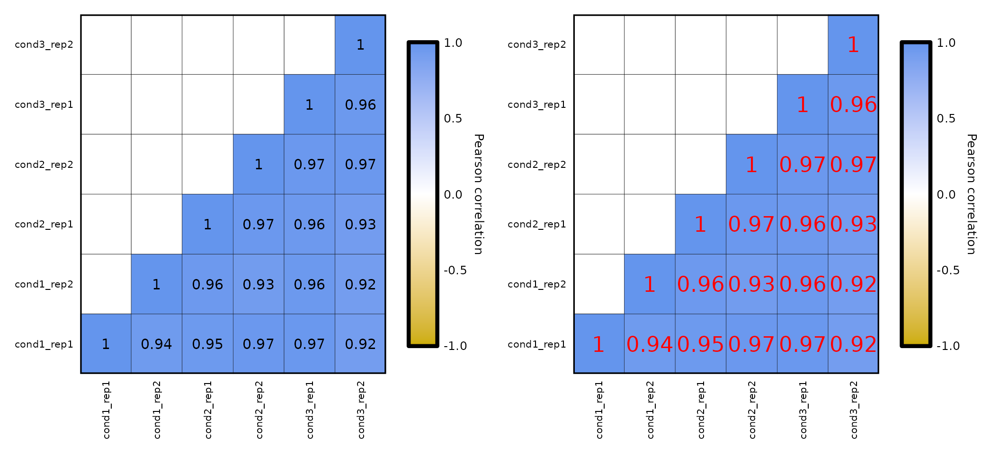
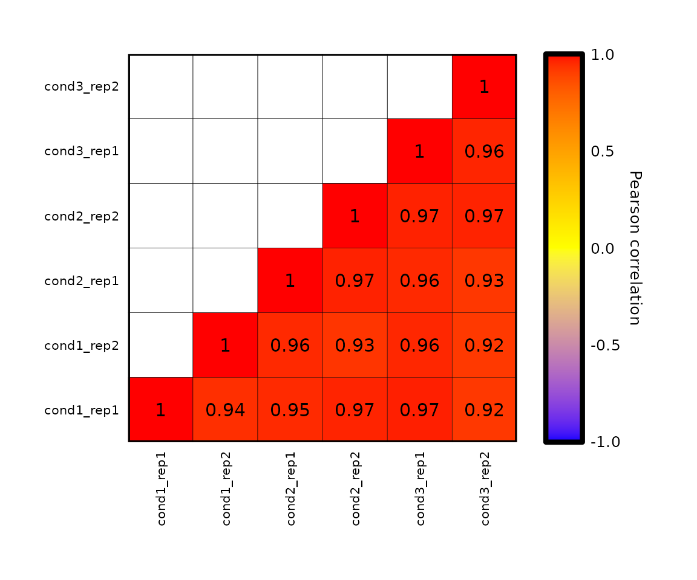
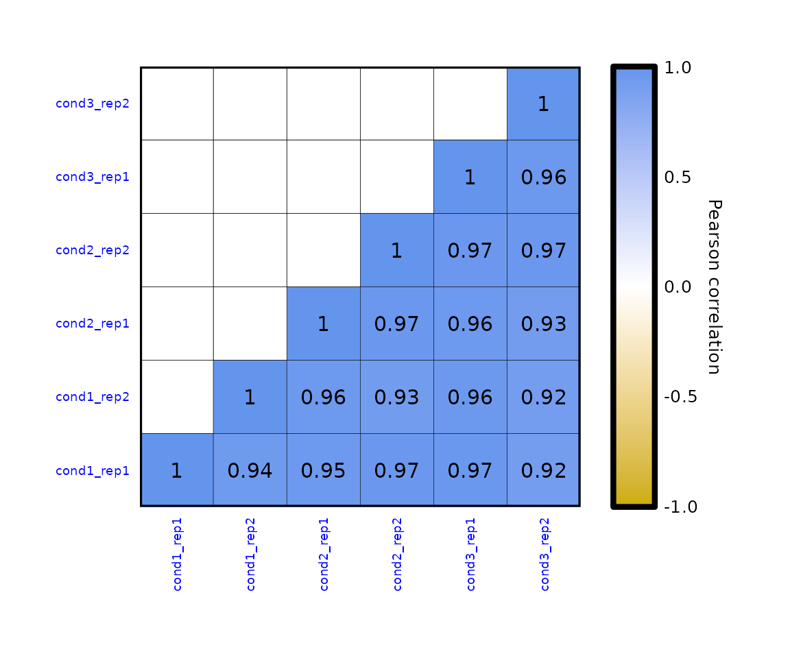
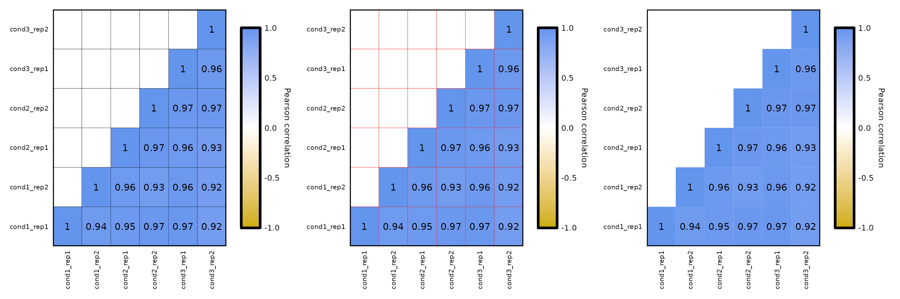
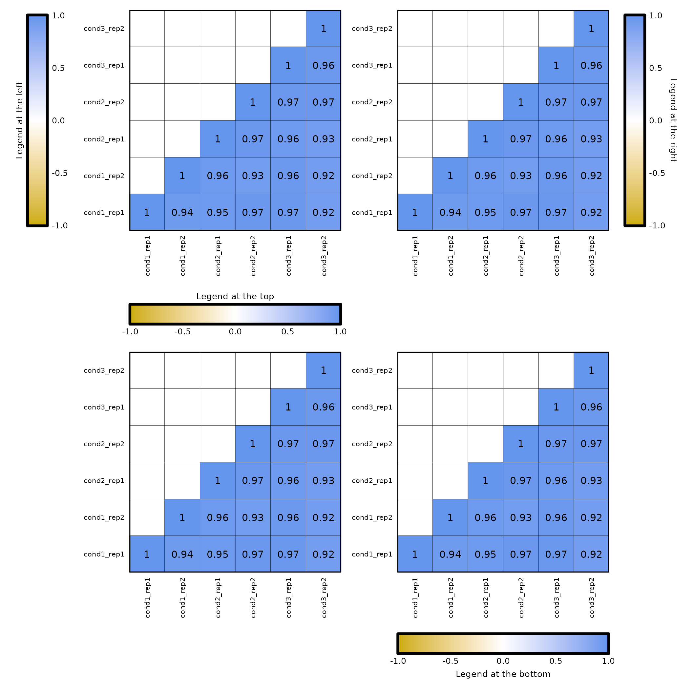
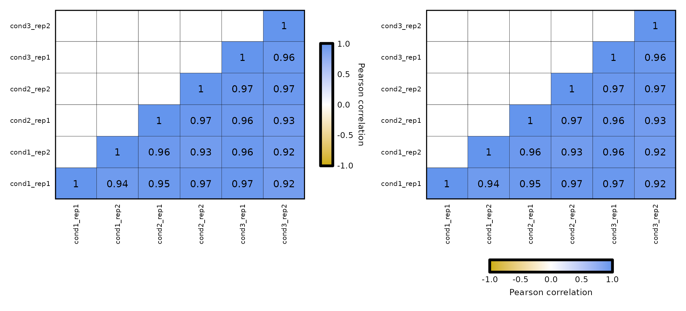

Run expressionCor()
Required input
The input for expressionCor() is a data frame with a Geneid column and several columns with expression values of each sample. It is required that the values in the Geneid column are unique.
expr <- read.delim("../testdata/tpm.tsv")
expr[1:5,1:5]## Geneid cond1_rep1 cond1_rep2 cond2_rep1 cond2_rep2
## 1 DDX11L1 0.0000000 0.000000 0.000000 0.000000
## 2 WASH7P 8.6190283 5.066649 5.182149 1.334332
## 3 MIR6859-1 76.1065829 3.728237 0.000000 2.945561
## 4 MIR1302-2HG 0.2112001 0.000000 0.000000 0.000000
## 5 MIR1302-2 0.0000000 0.000000 0.000000 0.000000Minimum run
expressionCor(df = expr)Groups and facets
expressionCor() allows to use groups, which then will be used to separate the correlation plots into facets. To enable this, set the parameter by_groups to TRUE. This option requires an extra column named group in which each row will have a determined value.
expr2 <- expr %>% dplyr::mutate(group = c(rep(c("group1", "group2", "group3"), nrow(expr)/3), "group1", "group2"))
head(expr2)## Geneid cond1_rep1 cond1_rep2 cond2_rep1 cond2_rep2 cond3_rep1 cond3_rep2
## 1 DDX11L1 0.0000000 0.000000 0.0000000 0.000000 0.0000000 0.000000
## 2 WASH7P 8.6190283 5.066649 5.1821493 1.334332 1.9376567 4.092955
## 3 MIR6859-1 76.1065829 3.728237 0.0000000 2.945561 0.0000000 3.388224
## 4 MIR1302-2HG 0.2112001 0.000000 0.0000000 0.000000 0.0000000 0.000000
## 5 MIR1302-2 0.0000000 0.000000 0.0000000 0.000000 0.0000000 0.000000
## 6 FAM138A 0.0000000 0.000000 0.1852678 0.000000 0.2386085 0.000000
## group
## 1 group1
## 2 group2
## 3 group3
## 4 group1
## 5 group2
## 6 group3
expressionCor(df = expr2, samples = colnames(expr2)[-1], by_groups = T)Options
In expressionCor(), the default is to compute the Pearson correlation. Nevertheless, the correlation method can be changed to Spearman or Kendall correlations by changing the corr_method argument to "spearman" or "kendall".
expressionCor(df = expr, corr_method = "pearson") + labs(title = "Pearson correlation (default)") +
expressionCor(df = expr, corr_method = "spearman") + labs(title = "Spearman correlation")
Also, the genes and/or samples used to compute the correlation values can be subset using the genes and samples parameters.
expressionCor(df = expr, genes = c("WASH7P", "FAM138A", "AL627309.1")) + labs(title = "Subset of genes") +
expressionCor(df = expr, samples = c("cond3_rep2", "cond1_rep1", "cond2_rep1")) + labs(title = "Subset of samples")Customization
Heatmap
expressionCor() allows an easy customization of the heatmap:
-
Plot type:
- by default,
expressionCor()plots only the lower part of the matrix (since it is symmetrical), including the diagonal. - setting the parameter
plot_typeto"upper"(plots the upper part of the matrix) or"full"(plots the whole matrix), the plot type can be changed.
- by default,
expressionCor(df = expr, plot_type = "lower") + labs(title = "Lower plot (default)") +
expressionCor(df = expr, plot_type = "upper") + labs(title = "Upper plot") +
expressionCor(df = expr, plot_type = "full") + labs(title = "Full plot")-
Diagonal:
-
expressionCor()plots the diagonal by default. - by setting
plot_diagonal = F, the diagonal is not drawn.
-
expressionCor(df = expr, plot_diagonal = F)-
Correlation values:
-
expressionCor()allows changing the coefficients color with the parametercoeffs_color, which is black by default. - the correlation coefficients can be removed from the plot if
coeffs_coloris set toNULL. - the parameter
coeffs_sizeallows the customization of the coefficients size, which is 4 by default.
-
expressionCor(df = expr, coeffs_color = "Black") +
expressionCor(df = expr, coeffs_color = "Red", coeffs_size = 6)
-
Colors:
- the colors of the plot can be changed by setting the parameter
plot_colorswith a character vector with 3 valid R colors. - the values from
plot_colorswill be passed toscale_fill_gradient2()to set the color of the limits and the midpoint.
- the colors of the plot can be changed by setting the parameter
expressionCor(expr, plot_colors = c("blue", "yellow", "red"))
-
Size:
- the size of the heatmap (both with and height) can be changed with the parameter
plot_sizewhich, by default is 85 (millimeters). - changing the plot size, will automatically change the legend size to adjust it to the height (if the legend is vertical) or width (if the legend is horizontal).
- the size of the heatmap (both with and height) can be changed with the parameter
expressionCor(df = expr, plot_size = 50)-
Title, subtitle, caption:
- the parameters
plot_title,plot_subtitleandplot_captionallow to specify the title, subtitle and caption of the plot, respectively. - also, the text of the title, subtitle, caption can be formatted with the parameters,
title_hjust,title_face,title_size,subtitle_face,subtitle_size,caption_size.
- the parameters
expressionCor(df = expr, plot_title = "Title", plot_subtitle = "Subtitle", plot_caption = "Caption")-
Axes:
- the text in the axes can be formatted with
axis_text_colorandaxis_text_size
- the text in the axes can be formatted with
expressionCor(df = expr,axis_text_color = "blue", axis_text_size = 7)
-
Cell border:
- the parameter
cell_borderallows to set the color of the cell border which, by default is gray. It can be set to a valid R color or to a character “NA”, which removes the border.
- the parameter
expressionCor(df = expr) +
expressionCor(df = expr, cell_border = "Red") +
expressionCor(df = expr, cell_border = "NA")
Legend
expressionCor() allows an easy customization of the legend:
-
Legend limits:
- by setting the parameters
legend_limitsandlegend_breaks_by, you can change the legend scale which, by default, goes from -1 to 1. - the legend midpoint is automatically set to the mean of minimum and maximum values.
- by setting the parameters
expressionCor(df = expr, legend_limits = c(0.9,1), legend_breaks_by = 0.05)-
Legend title:
- change the
legend_titleparameter which, by default, is set to the correlation method used (e.g. if the correlation is Pearson’s, the title is Pearson correlation).
- change the
expressionCor(df = expr, legend_title = "Title of the legend")-
Position of the legend:
- the
legend_posparameter allows to position the legend to the left, right, top or bottom.
- the
(expressionCor(df = expr, legend_pos = "left", legend_title = "Legend at the left") +
expressionCor(df = expr, legend_pos = "right", legend_title = "Legend at the right")) /
(expressionCor(df = expr, legend_pos = "top", legend_title = "Legend at the top") +
expressionCor(df = expr, legend_pos = "bottom", legend_title = "Legend at the bottom"))
-
Legend size: by setting the parameter
legend_sizewith a numerical vector of length 2, the size of the legend can be changed.- If the legend is vertical (i.e., at the left or at the right), the first number is the width and the second is the height of the legend, in millimeter.
- If the legend is horizontal (i.e., at the top or at the bottom), the first element is the height and the second is the width, in millimiters.
- By default, the legend size equals to the heatmap size.
expressionCor(df = expr, legend_size = c(5,50)) +
expressionCor(df = expr, legend_pos = "bottom", legend_size = c(5,50))